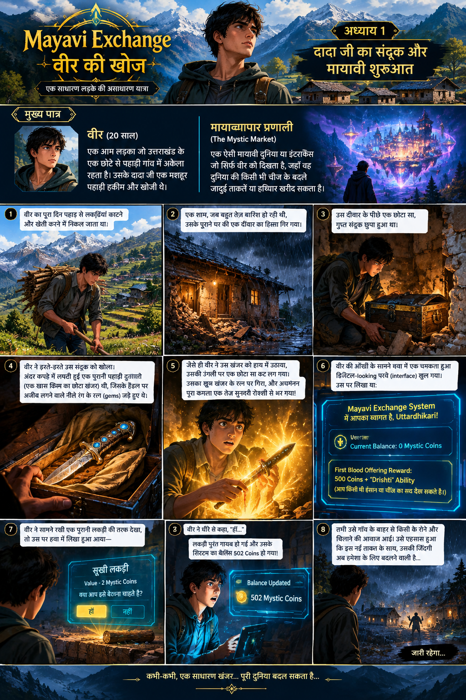

उत्तराखंड के एक छोटे से पहाड़ी गाँव में रहने वाले वीर की जिंदगी उस रात बदल जाती है, जब उसे अपने दादा जी का रहस्यमयी संदूक और एक मायावी एक्सचेंज सिस्टम मिलता है।
बीस साल का वीर उत्तराखंड के एक छोटे-से पहाड़ी गाँव में अकेला रहता है। उसके दादा जी अपने समय के मशहूर पहाड़ी हकीम और खोजी थे। एक तूफानी रात में वीर को दादा जी का एक रहस्यमयी संदूक मिलता है। उसके भीतर छिपा एक अनोखा खंजर उसकी जिंदगी को एक ऐसी मायावी दुनिया से जोड़ देता है, जहाँ हर चीज़ का मूल्य है और ताकत भी खरीदी जा सकती है।
मूल कहानी हिन्दी में प्रकाशित की जा रही है। अंग्रेज़ी संस्करण बाद में जोड़ा जा सकता है।
पहाड़ों के बीच बसे उत्तराखंड के एक छोटे-से गाँव में बीस साल का वीर अकेला रहता था। उसका पूरा दिन पहाड़ों से लकड़ियाँ काटने और खेतों में काम करने में निकल जाता था।
वीर के माता-पिता अब इस दुनिया में नहीं थे। उसके साथ बस उसके दादा जी की यादें थीं—दादा जी, जो अपने समय के मशहूर पहाड़ी हकीम और खोजी माने जाते थे। उनके बारे में गाँव में आज भी तरह-तरह की बातें होती थीं, लेकिन उनके जाने के बाद उनके कई रहस्य भी हमेशा के लिए दब गए थे।
एक शाम अचानक मौसम बिगड़ गया। आसमान काले बादलों से घिर गया और देखते ही देखते मूसलाधार बारिश शुरू हो गई। तेज़ हवा के झोंकों के बीच वीर अपने पुराने घर की छत और दीवारों को बचाने की कोशिश कर ही रहा था कि एक ज़ोरदार आवाज़ के साथ कमरे की एक पुरानी दीवार का हिस्सा ढह गया।
वीर कुछ पल तक वहीं खड़ा रहा। फिर उसकी नज़र टूटी हुई दीवार के पीछे पड़ी। वहाँ मिट्टी और पत्थरों के बीच लकड़ी का एक छोटा-सा संदूक छिपा हुआ था। संदूक पर धूल की मोटी परत जमी थी, मानो उसे वर्षों से किसी ने छुआ तक न हो।
वीर ने सावधानी से संदूक बाहर निकाला। उसके हाथ हल्के-से काँप रहे थे। आखिर ऐसा क्या था जिसे उसके दादा जी ने दीवार के पीछे छिपाकर रखा था?
उसने संदूक खोला। अंदर एक कपड़े में लिपटी हुई पुरानी पहाड़ी दुलारी रखी थी—एक खास किस्म का छोटा खंजर। उसके हत्थे पर अजीब नीले रत्न जड़े हुए थे। उन रत्नों से हल्की-सी नीली चमक निकल रही थी।
वीर ने जैसे ही उस खंजर को हाथ में उठाया, उसकी उँगली पर बहुत छोटा-सा कट लग गया। खून की एक बूंद खंजर के नीले रत्न पर गिरी।
अगले ही पल पूरा कमरा तेज़ सुनहरी रोशनी से भर गया। वीर ने घबराकर खंजर छोड़ना चाहा, लेकिन उससे पहले ही उसकी आँखों के सामने हवा में एक चमकता हुआ, डिजिटल जैसा पर्दा खुल गया।
उस पर शब्द उभर रहे थे—
नीचे वीर का नाम और उसका वर्तमान बैलेंस दिखाई दे रहा था:
फिर एक और संदेश चमका—
वीर की साँसें थम-सी गईं। संदेश के अनुसार ‘दृष्टि’ की मदद से वह किसी भी इंसान या वस्तु का सच देख सकता था। लेकिन इससे भी बड़ा सवाल था—यह सिस्टम केवल उसे ही क्यों दिखाई दे रहा था?
उसी समय उसकी नज़र कमरे में पड़ी एक पुरानी लकड़ी पर गई। हवा में उसके ऊपर एक नया संदेश दिखाई दिया—
वीर ने कुछ पल सोचा और बहुत धीरे से कहा, “हाँ…”
अगले ही पल वह लकड़ी उसकी आँखों के सामने गायब हो गई। उसी क्षण सिस्टम पर उसका बैलेंस बदल गया—
वीर अवाक रह गया। उसने अपनी मुट्ठी बाँधी। उसके सामने अब एक ऐसी दुनिया का दरवाज़ा खुल चुका था, जिसके बारे में उसने कभी सपने में भी नहीं सोचा था।
तभी गाँव के बाहर से किसी के रोने और चीखने की आवाज़ आई। वीर का चेहरा गंभीर हो गया। उसने खंजर की ओर देखा, फिर चमकते हुए मायावी सिस्टम की ओर।
उसे एहसास हो गया कि इस नई ताकत के साथ उसकी ज़िंदगी अब हमेशा के लिए बदलने वाली थी। लेकिन उसे अभी यह नहीं पता था कि उस रात की पुकार उसे किस रहस्य की ओर ले जाने वाली है…